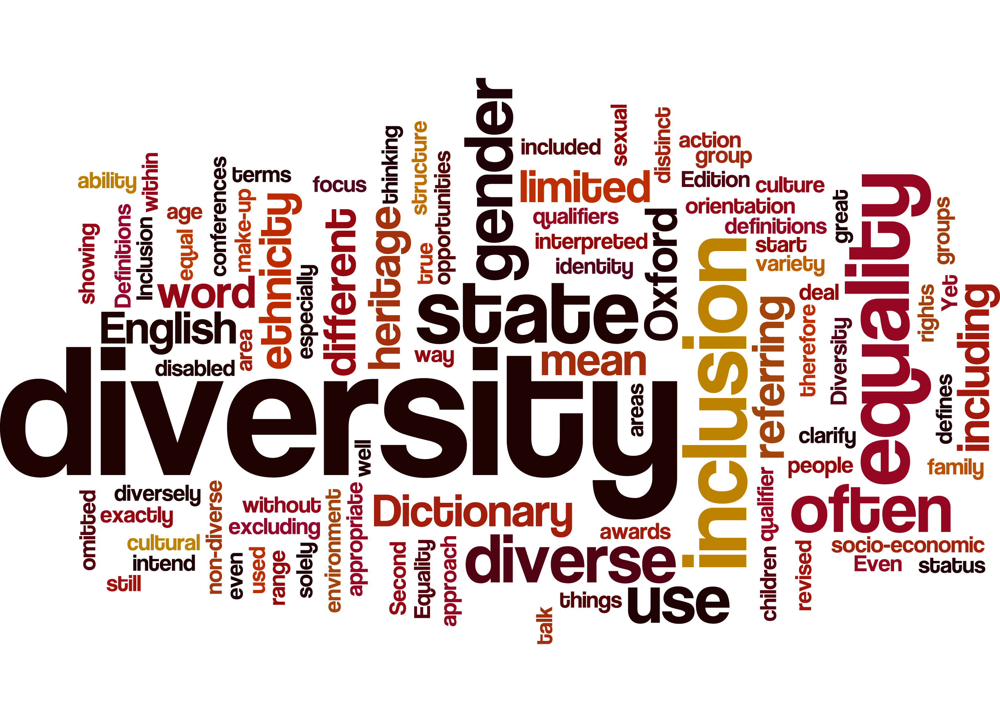
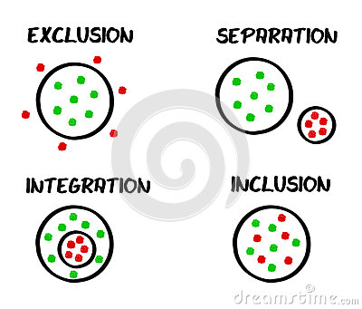

Women in Open Source Communities
#NoGenderIssueWhat is Diversity?
How to get Diversity & Inlusion?
Global Understanding of D&I
Race
Ethicity
Gender
Sexual orientation
Generation
Disability
Thinking Style
How it's working at Mozilla
How it's working at Mozilla
non-profit organization driven by a culture of openness and collaboration
Welcoming participation by everyone
*Always* available to listen, help and facilitate
Women + Mozilla = WoMoz
Composed of Men and Women
Focused in increasing visibility of women in FOSS contributions
Get more women in Tech
You don't need to be Geek
And I am part of them ...
Accessible Web <<<'project'>>>
Opportunities
Helps woman to get involved in Open Source projects
internships are open internationally to women